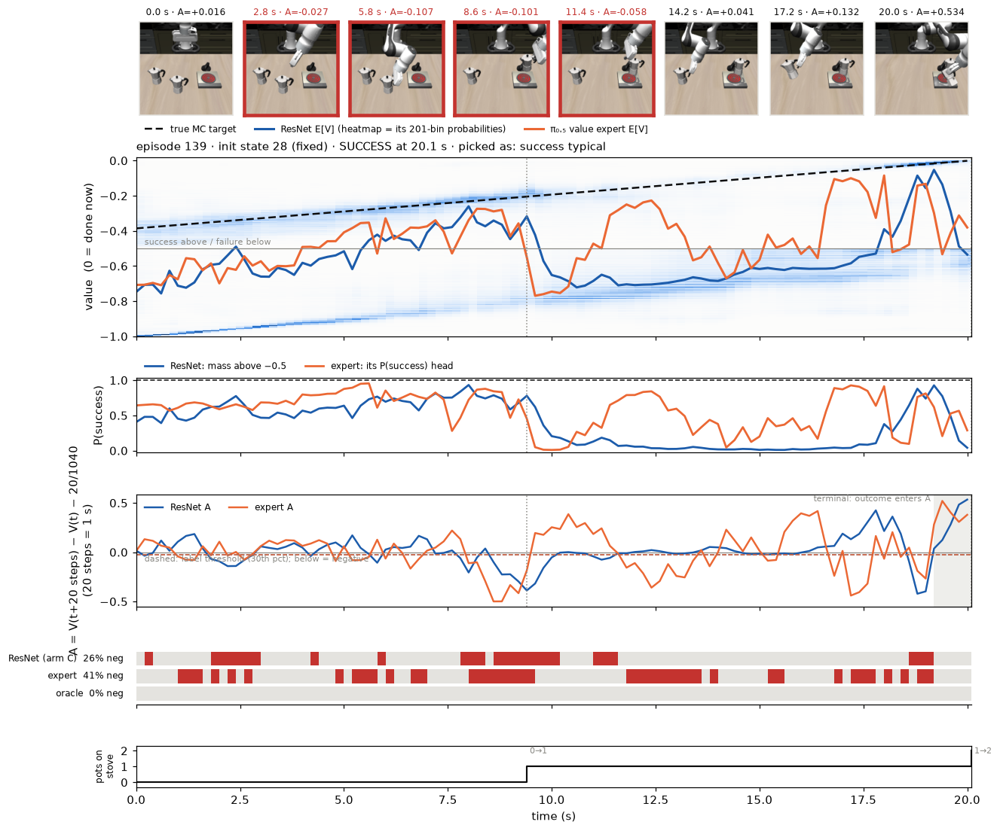
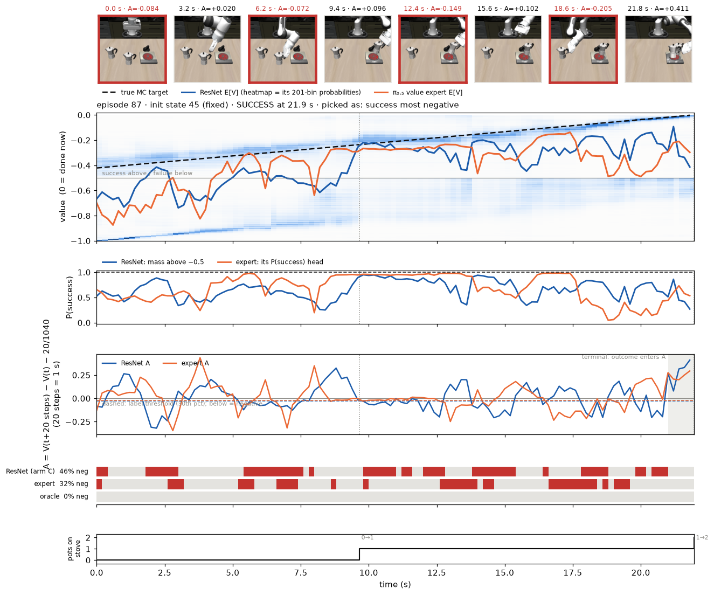
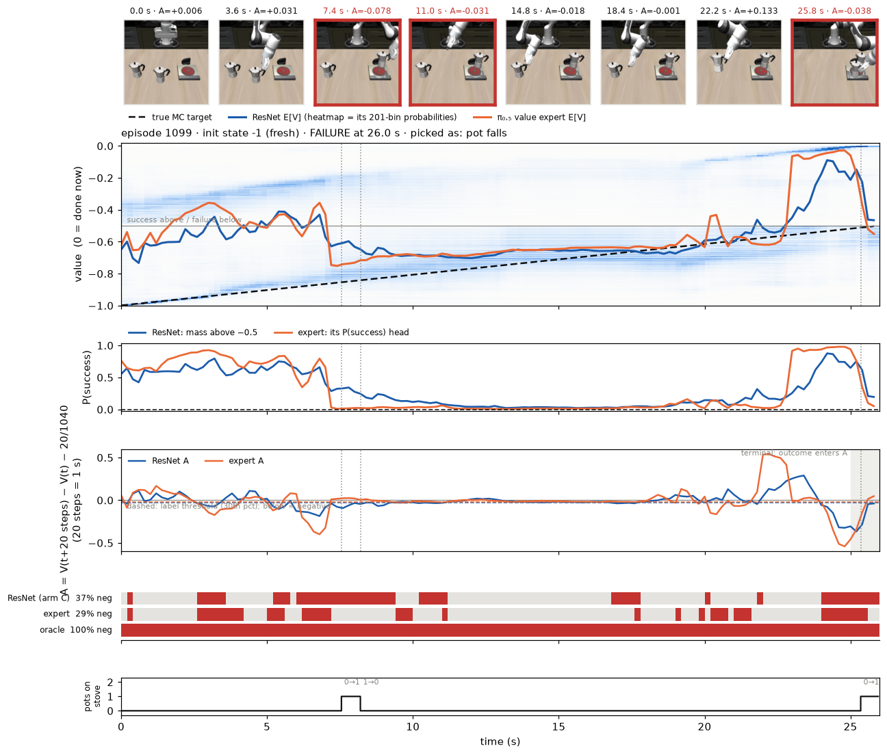
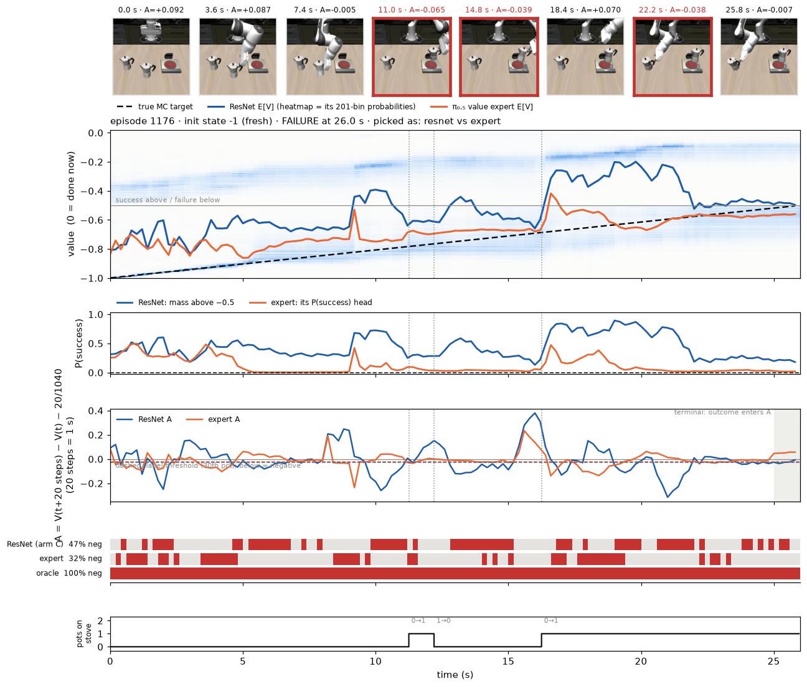
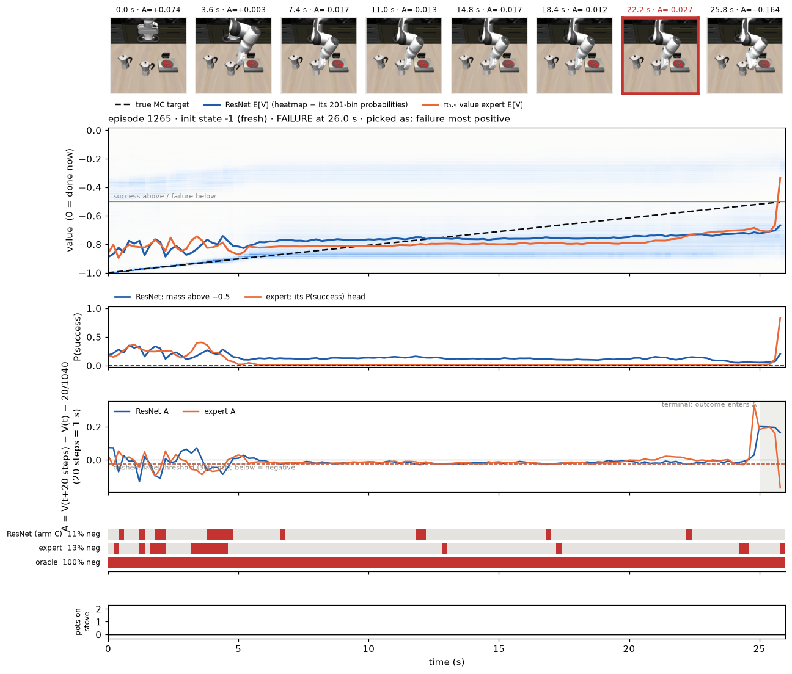

What advantages did the value functions assign?
LIBERO moka pots · arm C labels on train rollouts · 2026-11-04
Open the scroll-through viewer → scrub each episode frame by frame with the cameras, the value distribution, P(success), A and labels in sync.
How to read each figure
- Frames: 8 agentview frames, outlined in red where the ResNet label (the one arm C trained on) is negative.
- Heatmap: the ResNet's 201-bin value distribution per frame, from each episode's own out-of-fold model (it reproduces the stored V to within 6e-4). Lines show ResNet E[V] in blue, expert E[V] in orange and the true Monte-Carlo target as black dashes. Success targets lie above −0.5 and failure targets below.
- P(success): for the ResNet, the probability mass above −0.5; for the expert, its separate P(success) head.
- A = V(t+20 steps) − V(t) − 20/1040: the dashed lines are each model's label threshold (30th percentile). Frames below the line are labelled negative.
- Label strips: red = negative. Oracle = the rollout outcome copied to every frame.
- Pots on stove: from the simulator's goal predicates, with sub-second flicker removed.
Findings
- The ResNet's distribution is bimodal: one band on the success track, one on the failure track. E[V] mostly moves when weight shifts between the bands.
- The advantage is the 1-second (20-step) change in predicted P(success) (correlation 0.89–1.00 in these episodes). How fast the task progresses barely registers.
- At the key events the ResNet is mostly right: 76–92% of frames are negative in the 20 steps (1 s) before a pot falls, and 19% before a successful first placement (the base rate is 30%). The expert sits near the base rate at both.
- Exceptions: placement frames labelled negative (ep 139) and band-flicker labels in on-track successes (ep 87).
- Frames where nothing changes get positive labels by default (A ≈ −0.019 is above the −0.026 threshold). That makes stuck failures mostly positive (ep 1265).
| 20 steps (1 s) before… | n | ResNet % negative | expert % negative |
|---|---|---|---|
| pot falls off stove (failure) | 28 | 76% | 53% |
| pot falls off stove (success) | 5 | 92% | 48% |
| first pot placed (success) | 521 | 19% | 32% |
| first pot placed (failure) | 325 | 41% | 48% |
Episode 139 · success typical · success
Typical success. After the first pot lands at 9.4 s (step 188) the ResNet's P(success) collapses from about 0.8 to near 0 and stays there for about 7.5 s, so the placement frames are labelled negative. The expert dips too but recovers in about 1.5 s.

Episode 87 · success most negative · success
The success with the most negative frames. After about 13.5 s the ResNet's E[V] flips between the success and failure bands, so labels flip every 0.5–1 s even though the episode is on track.

Episode 1099 · pot falls · failure
A pot is placed at 7.6 s and falls off at 8.2 s. Both models drop P(success) from about 0.7 to near 0 between 6.3 and 7.3 s, so the frames that led into the bad placement are labelled negative. That is the credit assignment we want. The next ~15 s are flat, so they are mostly positive by default.

Episode 1176 · resnet vs expert · failure
The episode where ResNet and expert disagree most (58% of frames). The ResNet's E[V] swings between bands while the expert stays flat. Most of the disagreement is the ResNet's band switching.

Episode 1265 · failure most positive · failure
The failure with the most positive frames. It never places a pot and V barely moves, so A stays near −0.019, just above the −0.026 threshold: 89% of frames are labelled positive.
